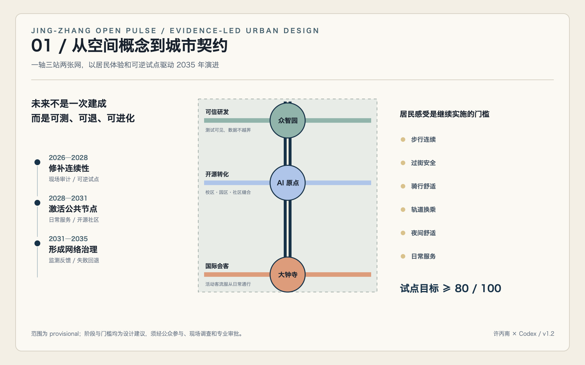
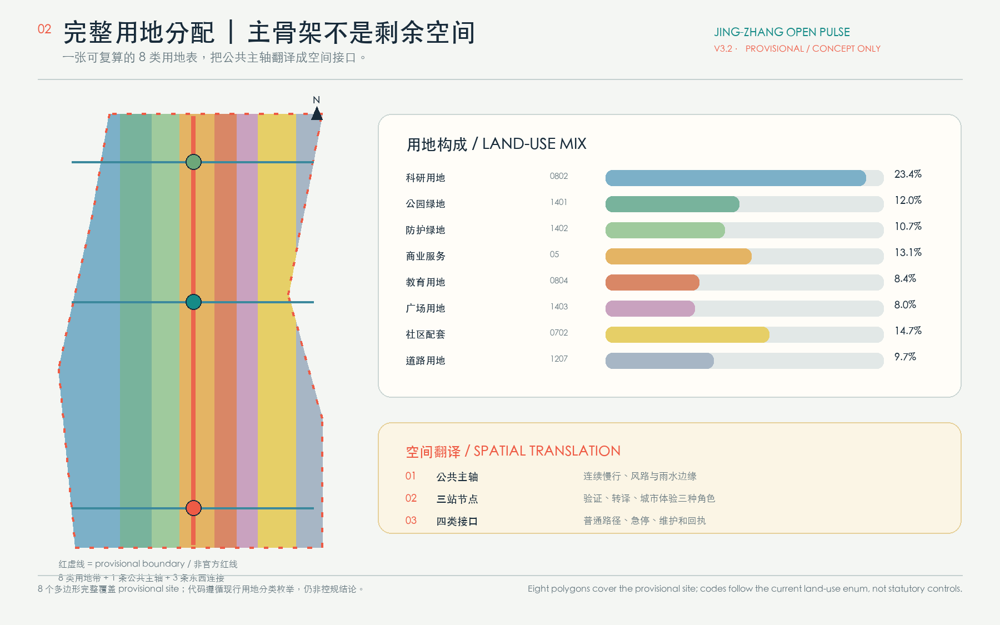
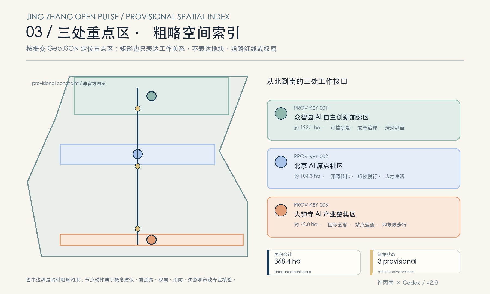
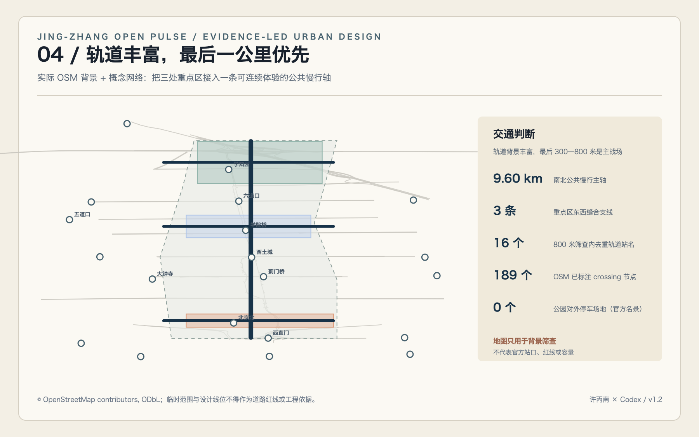
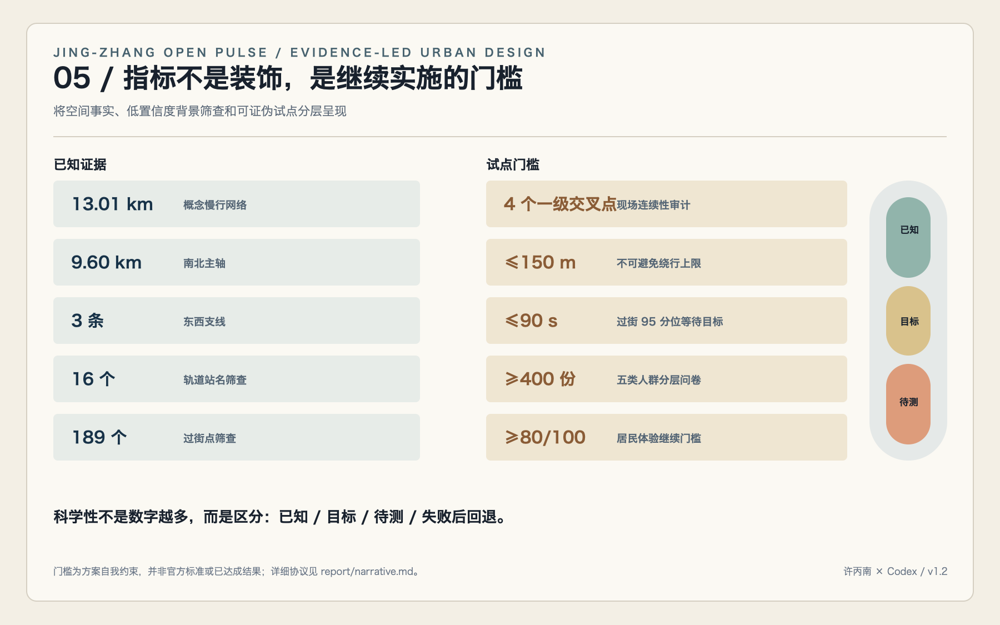

CENTENNIAL JING-ZHANG AI INNOVATION BELT / V1.2
京张开源脉冲
一条不是由装置定义、而是由公共性定义的 AI 创新带。设计把三处重点区串联为可信研发、开源转化与国际会客三种城市能力，并用指标、边界与人工复核约束每一项想象。
总体设计范围11.41 km²
连续绿地12.34%
公共空间7.33%
重点区域3 / 368.4 ha
概念慢行网络13.01 km
轨道站名筛查16
过街点筛查189
居民体验门槛≥80/100
所有空间图均源自当前提交包的 GeoJSON、metrics 与注明许可的 OSM 背景筛查。因官方 polygon 尚未发布，范围在本方案中仅作为临时设计约束和自检依据；正式专业评分前须按官方数据复算。
总览地图 · 三层范围 · 用地分区 · 交通慢行 · 蓝绿公共空间 · 建筑与更新项目
AI 场景以人工复核为前提；交通方案采用 9.60 公里南北主轴、三条东西支线与可逆试点；核心指标、任务覆盖、自检状态、来源与假设均已在提交包同步登记。
01 / 一条被公共性校准的 AI 轴
02 / 一轴 · 三站 · 两张网
03 / 三个节点，三种城市能力
04 / 让慢行成为城市的底层协议
05 / 以数据约束想象力